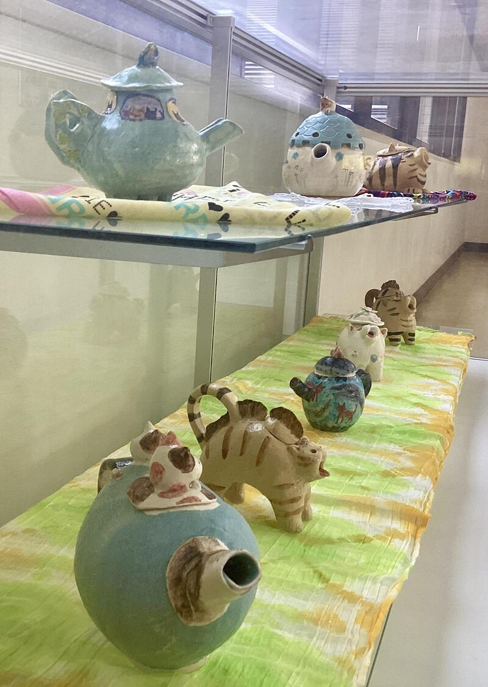
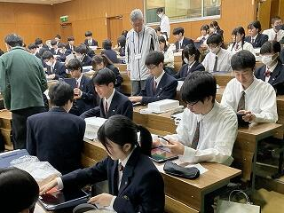
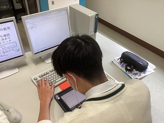
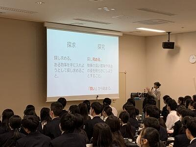
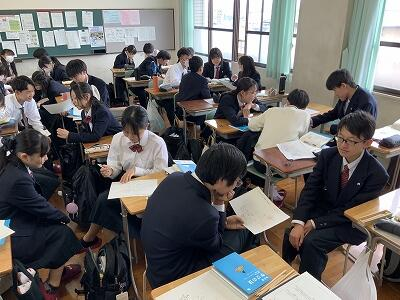
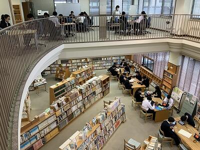
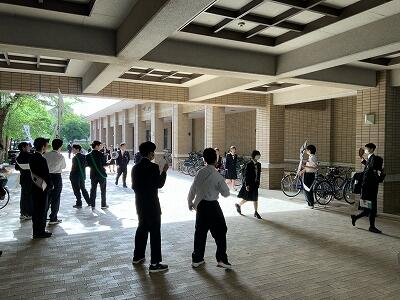

SAGANO BLOG
- >
- SAGANO BLOG
- >
- 日々の様子
2024年06月14日
嵯峨野高校の地理の授業では毎年本校周辺の地形の特徴や土地利用を考察するミニフィールドワークを実施しています。
今年度も１学期の中間テスト後の期間に、２年生の全クラスで実施しました。
嵯峨野高校の住所は常盤「段ノ上」町。東にある郵便局の住所は常盤「窪」町。住所表示にも地形の特徴が表れています。
道中には建物をはさむ二つの道路の高低差が目立つ坂道がありました。この高低差も気になります。
丸太町通には地下通路で交差するところもあり、地下通路を利用して丸太町通の道幅を歩測してみるミッションに取り組みました。
住宅街の中に見られる大きくくぼんだ道路。このくぼみがどのように形成されたのか。学んだ知識を駆使しながら考察してみます。
嵯峨野高校の周辺を普段歩き回ることはあまりないかもしれませんが、改めてゆっくり観察しながら歩いてみると、意外に面白い地形に気づくことができます。
自宅の周りの身近な地域においても、面白い地形を発見し、その地形がどのように形成されたのか、そこで営まれる人々の生活の特徴は何か、など地理的なものの見方・考え方を働かせた考察をしてみてはいかがでしょうか。
2024年06月13日


京・平安文化論ラボです。
古典離れを課題とし、その課題解決のための探究活動をしています。
その活動の様子を、NHKあさイチ様に取り上げていただけることになりました。
放送は、６月２０日（木）８時１５分からです。
「愛でたいnippon」のコーナーです。
この日は『源氏物語』の特集ということで、その中の１つとしてラボを紹介してくださいます。
どのような活動をしているのか、生徒の様子をぜひ御覧ください。
また、今年度は『源氏物語』と『枕草子』の２テーマで探究活動を行っています。
この作品の魅力を発信するため、文学研究はもとより、京都の神社仏閣を巡っていただくスタンプラリーの企画運営や、登場人物をイメージしたお菓子のデザイン・販売を行う予定です。
文学を読むという方法だけでなく、さまざまな方法で、古典の魅力を知っていただこうと生徒たちは奮闘しています。
2024年06月07日
嵯峨野のオアシス（２F：図書館）の前には、芸術科陶芸教員の作品を展示しております。
保護者等のみなさまへの陶芸教室もご好評をいただき、嵯峨野高校の陶芸文化がますます活発になっております！

生徒昇降口(1F)では世界のおもしろ建築と合わせて、昨年度の美術選択者（現2年生）の建築模型を展示しております。生徒のコンセプトも嵯峨野らしさが溢れており、ほほえましいこと間違いなしです！
そして生徒指導部教員の密やかな手作り工作や、マニアックな廊下の展示物。
さらにこちらは、校内在住カラス師匠による、熟練の技「カラスの巣」でござます！地学実験室前(4F)にて、匠の技を間近でご高覧いただけます。

ご来校の際には、ぜひ嵯峨野高校をお楽しみください。
2024年05月30日


中間テストが終わり、今週から２年生も平常補習が開講しました。国語、数学、英語の各教科に対し希望者を対象として実施しています。７限までの授業を受けた後での補習ということで、疲労も溜まっているかもしれませんが、教室の雰囲気は真剣そのもので、ハイレベルな内容に挑戦する熱気が漲っていました。
2024年05月16日
本校では４月17日（水）または18日（木）に学習用タブレット端末（iPad）を配布し、生徒自身で初期設定やネットワークに接続するための設定などを行いました。また、ICT担当教員からデジタルシチズンシップについての講話を行い、ICTの活用やタブレット端末への向き合い方などを学びました。

タブレット端末配布の様子
新しい端末を手にして皆嬉しそうにしていました。
タブレット端末配布から１か月ほどが経った現在では、各教科でデジタル参考書を使ったりノートアプリを活用したりするなど活用が進んでいます。

情報Ⅰの授業では、現在ソフトの操作方法について学習していますが、生徒たちは各自のタブレット端末で操作方法の動画を見ながら作業をしています。
今後も学習用タブレット端末を有効に活用していってくれることを期待しています。
2024年05月14日
＜春の図書館活動レポート＞
新学期の図書館の様子をお知らせします。
●Library Concert
昼休みに軽音楽部、吹奏楽部によるコンサートを２日間開催しました。スペシャルゲストでALTの先生の演奏もありました。


●茶道部お茶点て体験会
図書館上階のロフトでおこないました。
茶道部員に教えてもらいながら、自分でお茶を点（た）てます。毎回満席で、新入生から教職員まで36名が参加しました。
●図書館オリエンテーション
新入生を対象におこないました。司書による利用案内の後、新書を使ったワークショップ「おためし読書」を体験しました。
●図書館展示
「新学期スタート！春におすすめの本特集」
「高校生にすすめる本セレクション2024」(セレクションの詳細は、京都府立洛西高等学校図書館のページで紹介されています。)
次の季節展示も準備中です。お楽しみに。
2024年04月30日
入学式を終えて早１ヶ月。１年生も少しずつ学校生活に慣れてきました。
入学後２週間はステップアッププログラムとして、分掌オリエンテーションや教科ガイダンス、校内ツアーを実施しました。

また、ステップアッププログラム３日目には佛教大学副学長の原清治先生から、「新入生に向けたメッセージ」とのタイトルで御講演くださいました。
偶然にも講演前に原先生に話しかけた２人の生徒達。２人のやりとりを再現しながら、「探究活動を行ったり、これから先を生きていく中で、相手へのリスペクトを忘れないでほしい」というメッセージを受け取りました。
そして、ステップアッププログラムのラストは学年レクリエーション！
レクリエーション１つ目のペーパータワーコンテストでは、A4用紙20枚とはさみのみでどこまで高いタワーを立てられるか、各チームの工夫が光りました。これぞまさに、探究活動！
レクリエーション２つ目の大縄跳び。体力勝負かと思いきや、ここでも各クラス20人ずつのチーム分けや跳ぶメンバーの並び順など、工夫をするのが嵯峨野生。
盛り上がった結果は、以下の通りになりました。
ペーパータワーコンテスト １位 ２組５班 ２位 ７組１班 ３位 ６組３班
大縄跳び １位 ７組(82回) ２位 ６組(54回) ３位 ８組(46回)
嵯峨野高校での旅路は、まだまだ始まったばかり。少しずつ歩み始めたみんなの１歩を教員一同、あたたかく見守っています。
2024年04月30日
１年生の総合的な探究の時間「ロジカルサイエンス」では、探究学習の基礎的なスキルを身につけることを目標にしています。

初回ガイダンス
まずは課題設定のために、興味・関心を深堀りし、文献を探します。
クラスメイトと活発に対話しながら思考しています。

ペアワーク

図書館でのグループワーク
１年生たちがどんな探究の「問い」を設定するのか、楽しみです。
2024年04月30日
気温が上がり、暑くなってきました。
そんな中、嵯峨野高校では、朝から熱いバトルが繰り広げられています。

今年は１・２年生から生徒会の会長候補５名、副会長候補３名が名乗りを上げ、朝から大きな声で演説を行っています。
朝から大盛り上がりのピロティの様子でした。


2024年04月17日
４月１０日（水）～１２日（金）に、生徒会主催の「部活動相談会」を行いました。
たくさんの部活動がブースを設ける中、１年生は興味のあるブースを訪れて活動内容の説明を受けたり、疑問や不安について相談したりしていました。
先輩たちの温かさと、新たな仲間と散策する楽しさに満ちた、盛況の３日間となりました。

１年生たちは、１６日（火）の部活動登録後に、嵯峨野高校での部活動をスタートしました。まだ入部を検討している人も、気軽に部活動の様子を見に行ってください。先輩たちは、温かく皆さんを迎え入れてくれますよ。
2024年04月15日
春の「子ども読書の日」関連行事として、
4/11（木）昼休みに、図書館にて狂言部の公演をおこないました。

演目は「鬼瓦」です。
図書館入口では、狂言部作成のポスターと演目紹介がお出迎え。
最初はみなさん静かに鑑賞していましたが、
後半になるにつれ、少しずつ笑い声が聞こえてきました。


約90名の来場があり、楽しんでいただけたようです。
来場者のみなさん、狂言部のみなさん、ありがとうございました！
2024年04月14日


.jpg)
地理オリンピックの一次選抜・二次選抜が終了し、大会本部から嵯峨野高校にメダルと賞状が届きました。
受賞したのは、今春の卒業生と３年生の２名です。３月末と４月８日の伝達表彰時に、校長先生から銅メダルと賞状がそれぞれ授与されました。
嵯峨野高校生が地理オリンピックでメダルを獲得するのは、４年連続となります。嵯峨野高校で複数のメダリストが誕生したのは今回が初めてです。
受賞した２名からのコメントを紹介します。
「地理オリンピックに限らず、科学オリンピックというのは、自分がその科目が好きという気持ちと普段受けている授業で得た知識や考え方だけでも、十分挑戦できるものだと思うので、後輩のみなさんもぜひ、科学オリンピックにチャレンジしてみてください。」
「学んだことを繋げていき、世界を俯瞰する自分なりの視点を得られることに、地理の醍醐味を感じました。限られた時間の中で自分の好きをとことん追求する時間を持てたことは、非常に有意義だったと思っています。」
地理オリンピックに興味のある人は、地理オリンピックのホームページをご覧ください。過去問も出ています。今年度、多く嵯峨野生が地理オリンピックにチャレンジすることを期待しています。
2024年04月11日


本日のロングホームルームでは、昨日の班長会議の内容を班員で共有した後、野外活動で調理するメニューや必要な用具・食材などを話し合いました。皆が積極的に意見を出し合い、楽しい雰囲気で準備を進めている様子が伝わってきました。明日までにメニューと必要なレンタル用品の見積書を提出することになっています。班員全員で協力して決めていって欲しいと思います。
2024年04月10日

4月19日(金)に実施する野外活動に向けて、昨日までに各クラス５つの班を編成し、班長を選出しました。写真は本日昼休みに行われた班長会議の様子です。担当の先生から内容に関する詳細な説明があり、班長はその内容を明日のLHR等で班員に伝達する役割を担っています。全員が真剣に説明を聴き、必要なメモをとっていました。今後メニューや必要な用具の選定などを班ごとに協議し準備を進めていきます。
2024年04月09日
始業式ではお伝えしきれなかったので、


{kind=link}
{kind=link}
{kind=link}
{kind=link}
{kind=link}
{kind=link}
{kind=link}
{kind=link}
{kind=link}
{kind=link}
{kind=link}
{kind=link}
{kind=link}
{kind=link}
{kind=link}
{kind=link}
{kind=link}
{kind=link}
{kind=link}
{kind=link}
{kind=link}
{kind=link}
{kind=link}
{kind=link}
{kind=link}
{kind=link}
{kind=link}
{kind=link}
{kind=link}
{kind=link}
{kind=link}
{kind=link}
{kind=link}
{kind=link}
{kind=link}
{kind=link}
{kind=link}
{kind=link}
{kind=link}
{kind=link}
{kind=link}
{kind=link}
{kind=link}
{kind=link}
始業式で以下伝達表彰がありました！
|
第３回Cyber Sakura決勝ラウンド【全国１位】 コンピュータ部 |
| 第７回高等学校軽音楽コンテスト近畿北陸大会【宇治市長賞】軽音楽部 |
| 第65回日本植物生理学会 高校生生物研究発表会【顧問教員審査員賞】生物ラボ |
| 第18回科学地理オリンピック日本選手権兼第20回国際地理オリンピック選抜大会【銅賞】 |
{kind=link}
{kind=link}

おめでとうございます！生徒の華々しい活躍を満開の桜も祝福しています。
{kind=link}
{kind=link}
〒616-8226
京都市右京区常盤段ノ上町15番地
TEL 075-871-0723 FAX 075-871-0724
E-mail [email protected]
Copyright (C) 京都府立嵯峨野高等学校 All Rights Reserved.